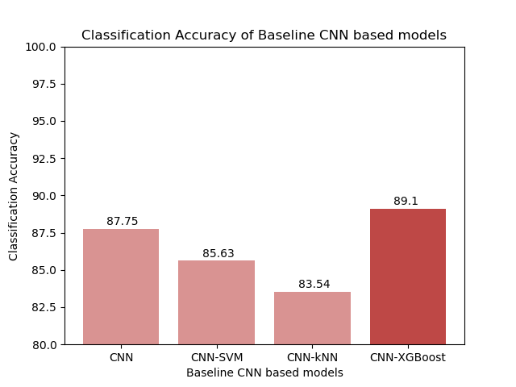
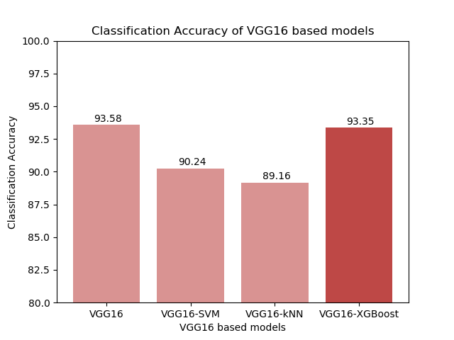
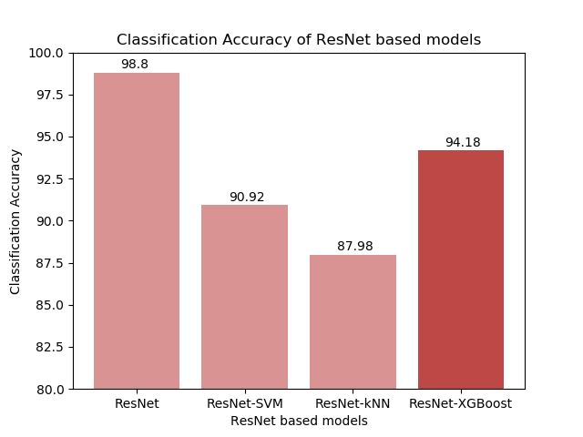

I was first introduced to XGBoost when I was working as a data scientist. I was surprised at how accurate, efficient, and interpretable it was. Naturally, I was very intrigued by recent research [1, 2] suggesting a new CNN+XGBoost architecture for non-image classification tasks. It inspired me to look into its potential for real-world application, so I decided to further test this idea with more complex datasets and larger CNN structures. Results show that with a simple CNN architecture the CNN-XGBoost model outperforms the traditional CNN model. But, when working with more complex CNN structures the hybrid model is not as accurate as the original CNN architectures. Github Reposiroty
CNNs and Gradient Boosting for Image Classification
Image classification has been one of the fundamental problems in the field of image processing and can be considered the basis of other computer vision problems (image localization, segmentation, object detection, etc.). The introduction of deep learning and deep neural networks [3] has been essential to the advancement of computer vision and has produced continuous breakthroughs in image classification [4][5].
Convolutional neural networks (CNN) are one of the most popular deep learning architectures for image classification. The popularity of CNNs come from their ability to process and extract features from images through their convolutional and pooling layers. Said features are then fed to a fully connected neural network that performs the classification task. Even though CNNs have been acknowledged as outstanding feature extractors, the traditional classification layers can fail to interpret the extracted features.
eXtreme Gradient Boosting [6] (XGBoost) is a machine learning algorithm built on the principles of the gradient tree boosting algorithm and designed for speed and performance. In recent years XBoost has become a very popular classifier due to its efficiency and accuracy. I wanted to examine if I could improve the performance of traditional CNNs by integrating CNNs with an XGBoost classifier. Our goal is to leverage the CNN to extract quality features and feed them as input to the XGBoost to classify images.
What exactly does the CNN-XGBoost model look like? The CNN maintains all of its feature extracting layers, and the feature flattening later. The XGBoost model replaces the fully connected NN and will perform the classification task based on the flattened features obtained from the CNN. How do I train the CNN-XGBoost model? First, I train the CNN with the original images. Then, I drop the fully connected layers and feed the flattened features (from the trained CNN) to an XGBoost model to train it for classification. The goal is for XGBoost to obtain quality features from the images and provide more accurate results than the traditional CNN architecture.
Previous work on the CNN-XGBoost model has either dealt only with singular dimension inputs [1, 2] or based on simple (in terms of structure) CNN architectures [7]. For this project, I test the CNN-XGBoost model with the CIFAR-10 dataset, a set of labeled 32x32x3 colored images classified into ten categories. I evaluate the proposed model with three different CNN architectures, a baseline CNN, VGG16, and ResNet.
The baseline architecture is built to replicate the baseline performance porposed by the team that provides the CIFAR-10 dataset. It consists of six convolutional layers, with three max pooling layer, one every two convolutional layers, and a flattening layer. The VGG16 architecture was introduced by K. Simonyan and A. Zisserman [8] and was able to achieve a 92.7% top-5 accuracy for the ImageNet dataset (14 million images belonging to 1000 classes). The ResNet architecture has been one of the most groundbreaking neural network architectures in the field of computer vision. It was introduced by He et al. [9] in 2015. I will be using ResNet-50 which is 50 layers deep.
After training all three variants of the CNN-XGBoost model, I evaluated their performance by comparing their accuracy with the original CNN and two other hybrid classifiers, CNN-SVM and CNN-kNN.
- 
- 
- 
In all three cases, the CNN-XGBoost model was able to outperform the CNN-SVM & CNN-kNN models. The more complex the CNN structure, the more prominent the difference was between our proposed model and the other two hybrid models. In the case of the baseline CNN, the CNN-XGBoost model was also able to outperform the original CNN. Once we started working with the more complex models, both VGG16-XGBoost and ResNet-XGBoost had lower accuracy than their original CNN models. The more complex the architecture, the more significant the difference was in performance.
Due to a lack of resources, the parameters used for XGBoost were tuned manually. It could explain why the performance with VGG16 and ResNet-50 architectures (which had more complex classification layers) was not as accurate. This is something I would like to test better in the future. resources